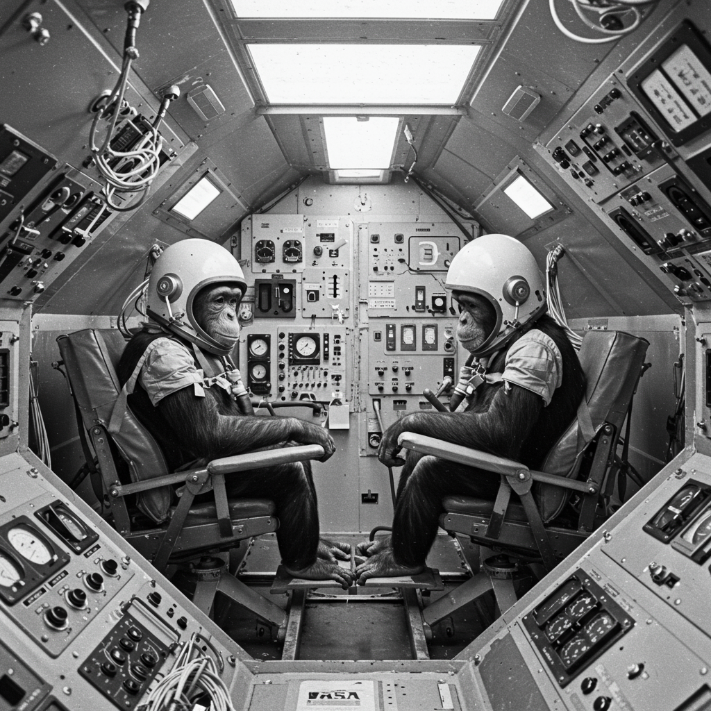

Expediente Biológico Doble: HAM & ENOS
Sujeto Alfa: HAM
Ficha Técnica – HAM
- Nombre clave: HAM
- Especie: Pan troglodytes
- Fecha de nacimiento: circa 1957
- Origen: Camerún
- Misión: Mercury MR-2 – Vuelo suborbital
- Fecha: 31 de enero de 1961
- Duración: 16 minutos y 39 segundos
- Altitud máxima: 253 km
- Velocidad: 9,426 km/h
- Recuperación: USS Donner – Océano Atlántico
Misión y Legado
HAM fue el primer primate entrenado para operar controles dentro de una cápsula espacial. Su misión permitió verificar que un ser vivo podía realizar tareas cognitivas complejas en microgravedad. A pesar de un aterrizaje abrupto, sobrevivió y completó su entrenamiento con éxito.
HAM vivió hasta 1983 y se convirtió en símbolo del inicio de la era tripulada en EE. UU. Su nombre proviene del centro médico aeroespacial Holloman.
Signos Vitales (reingreso)
- Frecuencia cardíaca: 210 bpm
- Presión arterial: 160/95 mmHg
- Estado mental: Activo y alerta
- Lesiones: Mínimas – recuperación completa
Sujeto Beta: ENOS

Ficha Técnica – ENOS
- Nombre clave: ENOS
- Especie: Pan troglodytes
- Fecha de nacimiento: circa 1959
- Origen: Camerún
- Misión: Mercury-Atlas 5 – Vuelo orbital
- Fecha: 29 de noviembre de 1961
- Órbitas completadas: 2
- Duración: 3 horas y 20 minutos
- Recuperación: USS Stormes – Océano Atlántico
Misión y Relevancia
ENOS fue el primer primate en completar una órbita terrestre. Su entrenamiento fue más extenso que el de HAM, incluyendo tareas bajo estrés y fallos técnicos simulados.
Durante el vuelo real, enfrentó malfunciones reales en su cápsula y aun así logró operar comandos manuales, demostrando resistencia, adaptabilidad y confirmando que los humanos podían sobrevivir misiones orbitales.
Fue esencial para validar el programa Mercury, justo antes del vuelo de John Glenn.
Signos Vitales (reingreso)
- Frecuencia cardíaca: 190 bpm
- Presión arterial: 155/92 mmHg
- Estado mental: Concentrado pese al estrés
- Lesiones: Ninguna grave – estado saludable